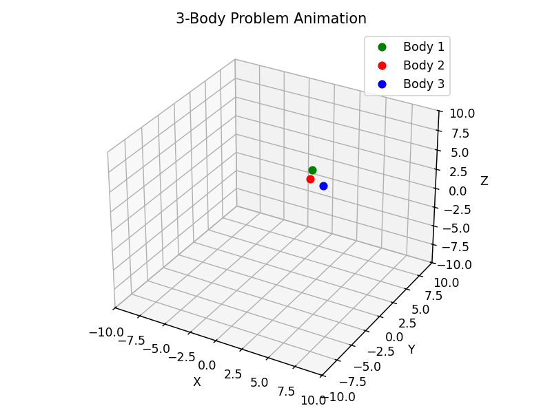
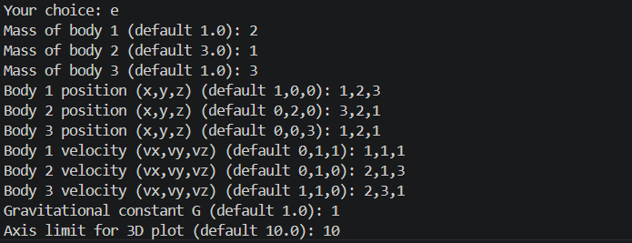

ThreeBodySim
Overview
ThreeBodySim is a Python-based 3D visualization of the classical three-body problem using matplotlib, scipy, and numpy.
The project simulates the chaotic gravitational interaction between three mutually attracting bodies and visualizes their motion through real-time 3D animation.
The simulator focuses on accessibility and interactive experimentation rather than strict scientific accuracy.
Features
- Interactive CLI configuration menu
- Customizable masses, positions, velocities, and gravity
- Real-time 3D animation using matplotlib.animation
- Exports simulation data to CSV format
- Exports animation as MP4 using FFmpeg
- Automatic stop condition when bodies leave bounds
- Graceful hiding of out-of-bound bodies
- Trajectory analysis support post-simulation
- Available as a PyPI package: threebodysim
Requirements
- Python 3.7+
- numpy
- scipy
- matplotlib
- pandas
- ffmpeg
Usage
Run the simulator through the command line and choose between default values or custom simulation parameters.
- Press Enter to use default values
- Edit masses, velocities, positions, and gravitational constants
- Generate animated orbital simulations in real time
- Export simulation outputs for further analysis
Screenshots


Known Limitations
The simulator prioritizes visualization and usability over exact physical accuracy.
- No collision detection between bodies
- No energy conservation tracking
- Fixed timestep sampling
- Newtonian gravity only
- No relativistic corrections or external forces
Future Enhancements
- Energy and angular momentum tracking
- Real-world unit support
- Collision detection and merging
- Improved numerical integrators
- Web-based visualization using WebGL or Three.js
Development Notes
The project was built to explore chaotic systems and orbital mechanics through interactive scientific visualization.
Simulation outputs are automatically stored inside the outputs directory for easier organization and post-processing.